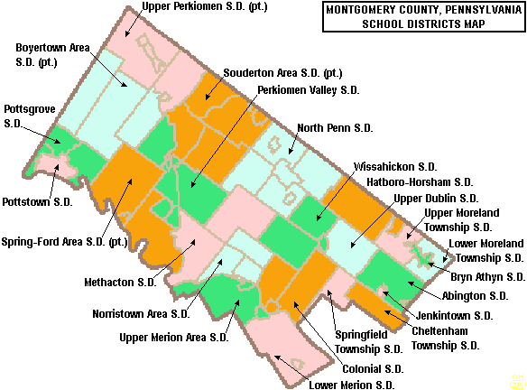

winter operations desk
Will the morning commute
change tomorrow?
One calm view of Montgomery County school weather, official notices, and the forecast signal behind them.
Source-first by designForecast risk is never presented as a closure decision.
regional signal · central MontgomeryChecking forecast…Connecting to the National Weather Service
estimated snow— in
temperature—°F
forecast risk—
county operating picture
District map

click a district to inspect its official source
official statusnot announcedforecast risklowwatchhigh
source registry
District status ledger
keep checking the source
Where the signal comes from
SnowWatch brings the forecast into one view, but district decisions still come from district communications.